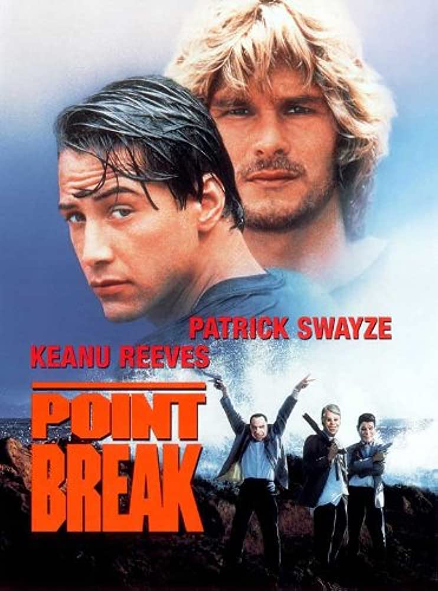

Point Break

- Release date : July 12th, 1991
- Run time : 2 hours, 2 minutes
- Rating: R
Point Break takes place in Los Angeles, and it follows hotshot FBI agent Johnny Utah, who works in the bank robbery division of the LA FBI field office. When he arrives, he learns of The Ex-Presidents, a group of bank robbers who were seemingly untraceable. However, Utah's more senior partner on the case, Pappas, has a theory that the robbers are surfers. The only way to prove this theory true is for Utah to become a surfer himself with hopes that he can find these prolific bank robbers. But the story isn't that easy, and various complications arise that make Utah choose who he wants to be, a surfer or an FBI agent.
Josh's notes: I enjoyed this movie much more than I thought I would. Its surfing elements are just as apparent as the gunfights, and the Ex-Presidents are marketed and shown as a true criminal machine and not just a bunch of dumb surfers. The casting on this movie is reasonable, with Keanu being cast perfectly and Patrick Swaye still riding high off his 80's fame. Overall this is a 9/10 movie.